Bienvenid@s a PSMB (Descarga PSMB para Windows aquí)
Physics of the Standard Model and Beyond (PSMB) es un software educativo para modelar el comportamiento físico de partículas elementales en el marco del Modelo Estándar y sus extensiones, destinado a automatizar el cálculo simbólico y numérico de las ecuaciones del modelo de Pati-Salam, permitiendo al usuario explorar interactivamente su espacio paramétrico, visualizar las etapas de ruptura de simetría y contrastar sus predicciones con resultados experimentales disponibles.

PSMB permite a los estudiantes trascender el cálculo manual y centrarse en la física detrás del Modelo Estándar y sus extensiones. El uso de software especializado en física del Modelo Estándar (SM) y Más Allá del Modelo Estándar (BSM) tiene un impacto profundo en la educación científica y la formación de futuros físicos teóricos y experimentales.
PSMB representa una innovación educativa que integra la teoría de partículas elementales con las tecnologías de simulación y cálculo simbólico, fortaleciendo el aprendizaje, la capacidad analítica y la formación científica de los estudiantes de física contemporánea.
Valor esperado en vacío (VEV)
Párrafo 1: Explica la versión actual del módulo.
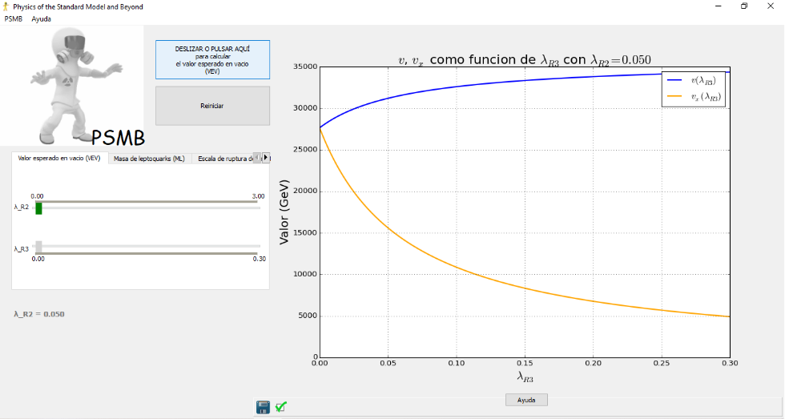
Párrafo 2: Detalla los pasos para probar el módulo.
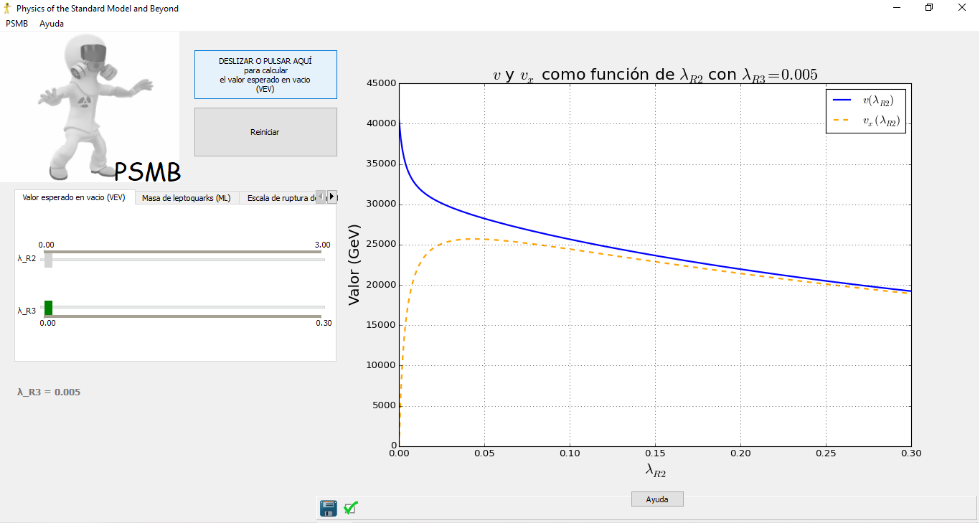
Masa de leptoquarks (ML)
Párrafo 1: Señala dónde se encuentra el módulo.
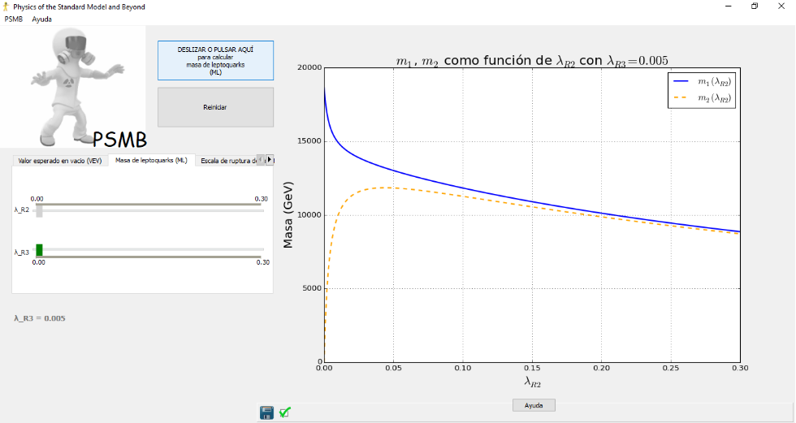
Escala de ruptura de simetría (ERS)
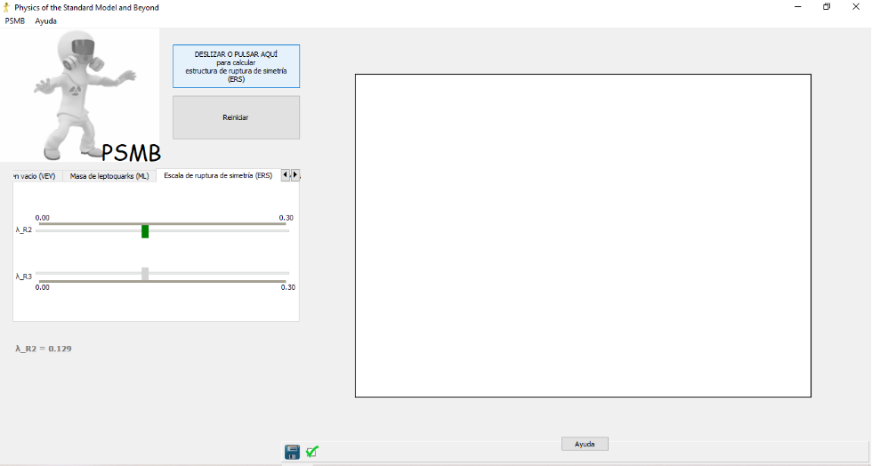
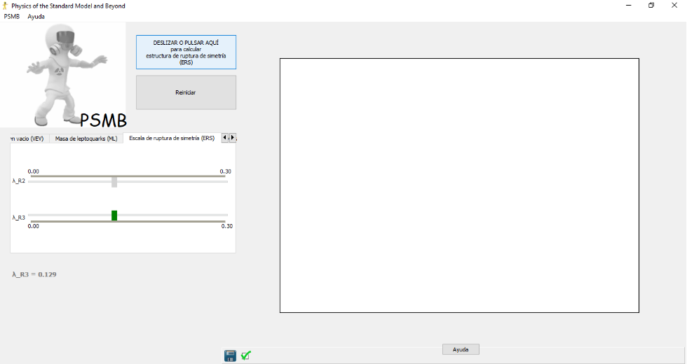
Masa de neutrinos (MN)
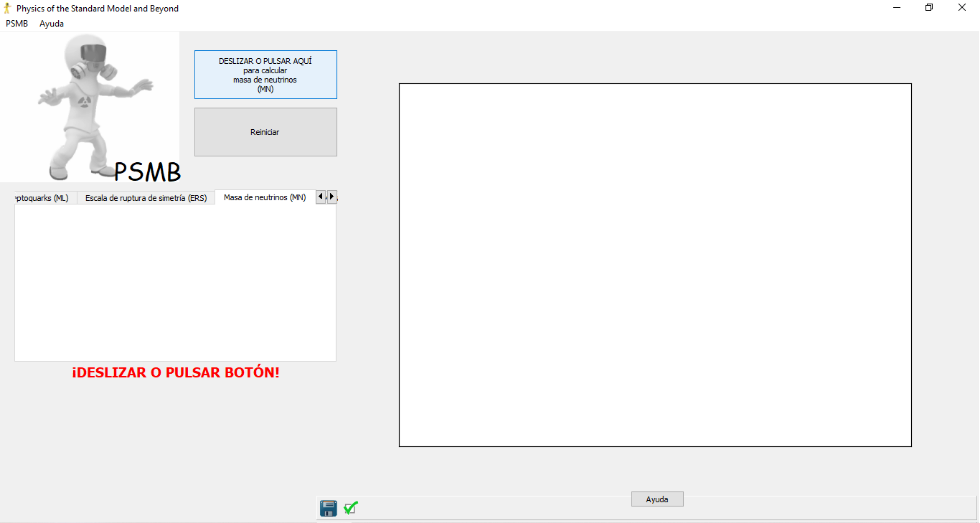
Masa de bosones escalares (MBE)
En modelos más allá del Modelo Estándar, como los modelos de dos dobletes de Higgs, también se incluyen términos cuadráticos que afectan la masa de nuevos bosones de Higgs y posibles fermiones. Por otro lado, los términos de interacción describen cómo el campo de Higgs interactúa con otros campos, como los fermiones y los bosones gauge. Estos términos son esenciales para la generación de masas de partículas mediante la ruptura de simetría. En el caso de modelos como Pati-Salam o los modelos de Higgs compuesto, los términos de interacción pueden ser más complejos e incluir múltiples campos de Higgs, resultando en un potencial más rico y la posibilidad de nuevas interacciones.
En nuestro modelo, los términos cuadráticos, cruciales para determinar las masas y mezclas de las fluctuaciones, son:
El primer término \( -2 \mu_R^2\delta R_{i \alpha} \delta R^{i \alpha} \), tiene una masa efectiva dada por \( -2 \mu_R^2 \), este término da una contribución uniforme a las masas de todos los componentes de las fluctuaciones \( \delta R_{i \alpha} \).
El segundo término \( 4 \lambda_{R1} R_{i \alpha}^{(0)} R^{(0)i \alpha} \delta R_{i \alpha} \delta R^{i \alpha} \) describe cómo el VEV del campo de Higgs \( R_{i \alpha}^{(0)} \) afecta las masas cuadradas de las fluctuaciones \( \delta R_{i \alpha} \).
El tercer término \( 4 \lambda_{R2} R_{j \beta}^{(0)} R^{(0)j \alpha} \delta R_{i \alpha} \delta R^{i \alpha} \) también depende del VEV \( R_{j \beta}^{(0)} R^{(0)j \alpha} \), pero tiene una estructura más específica. Los índices \( (j,\beta) \) y \( (j,\alpha) \) están relacionados, lo que introduce un acoplamiento cruzado entre diferentes componentes de las fluctuaciones; describe cómo la mezcla entre los componentes del VEV afecta a las masas cuadráticas.
El cuarto término \( \lambda_{R3} \delta R_{i4} \delta R^{i4} \) es específico para las fluctuaciones \( \delta R_{i4} \), es decir, aquellos componentes donde el índice \( \alpha = 4 \), representa un término de masa específico para los componentes \( \delta R_{i4} \), independiente de otras fluctuaciones. Este término introduce una masa efectiva específica para las fluctuaciones \( \delta R_{i4} \), modulada únicamente por el acoplamiento \( \lambda_{R3} \).
Para determinar \( M_{i\alpha, j\beta} \), derivamos dos veces \( V \) con respecto a \( \delta R_{i \alpha} \) y \( \delta R_{j\beta} \):
Con el VEV diagonal \( (v, v, v, v_x) \), el término de masa es:
Las curvas para \( m_{ii} \) y \( m_{i4} \) se sobreponen (Figura...) debido a que la contribución adicional de \( \lambda_{R3} \) al término \( m_2^2 \) es pequeña comparada con los términos dominantes. Esto coloca a \( m_{ii} \approx m_{i4} \) en la escala de valores considerada.
El término añadido al potencial para provocar la ruptura espontánea de simetría no da lugar a una nueva masa. La masa de Higgs \( m_{ii} \) para el valor estable de \( \lambda_{R3}=2.0 \) es de \( 69.56\ \text{TeV} \).
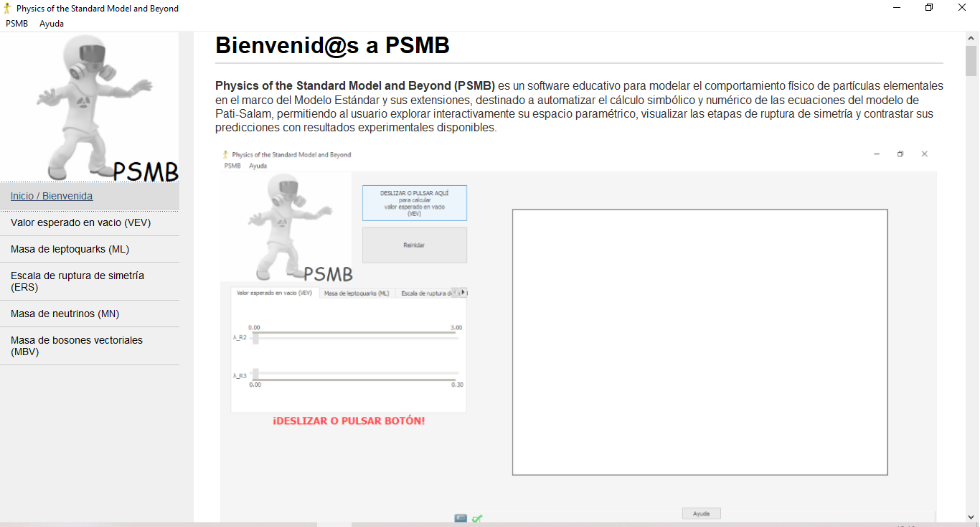
Masa de bosones vectoriales (MBV)
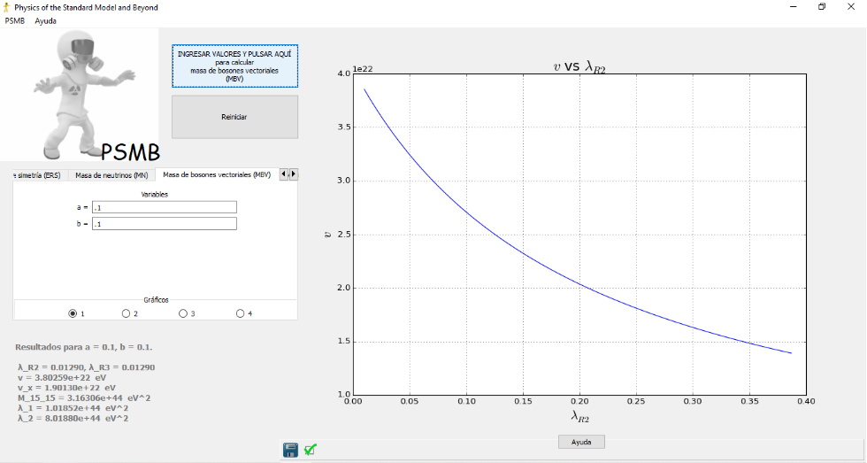
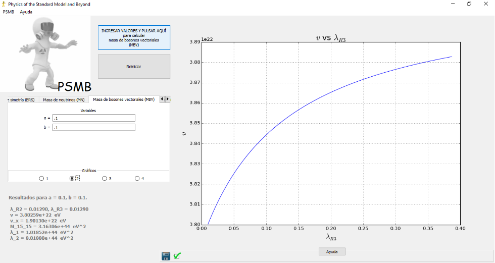
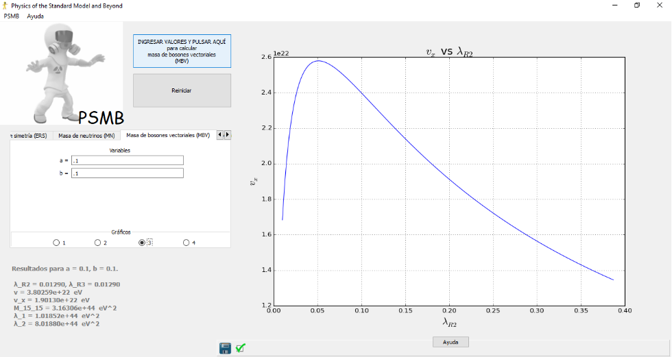
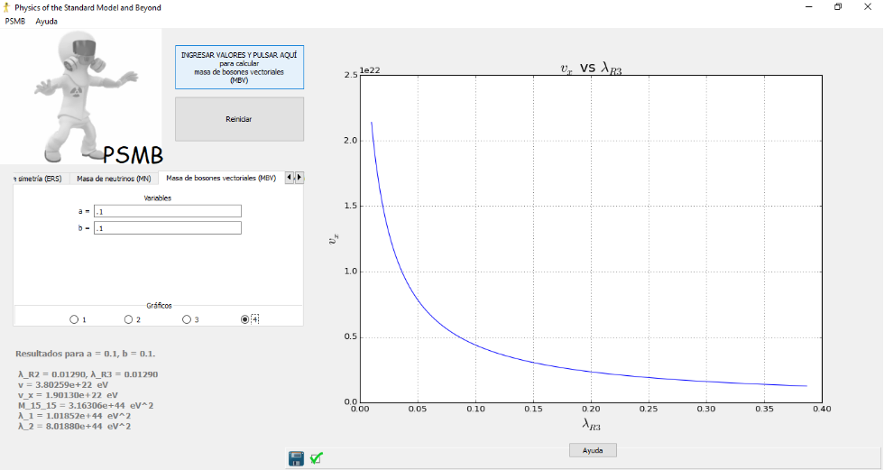